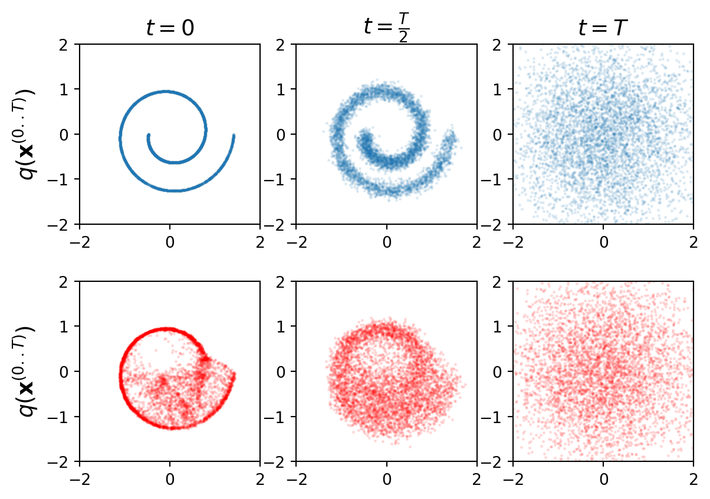

import numpy as np
import torch
import torch.nn as nn
import matplotlib.pyplot as plt
from sklearn.datasets import make_swiss_roll
from tqdm import tqdm
dtype = torch.float32
device = 'cuda'Diffusion 2015 Paper Implementation
Diffusion Models
What are Diffusion Models?
- The essential idea, inspired by non-equilibrium statistical physics, is to systematically and slowly destroy structure in a data distribution through an iterative forward diffusion process. We then learn a reverse diffusion process that restores structure in data, yielding a highly flexible and tractable generative model of the data. Diffusion Process consists of forward and reverse process.
Forward Process
- The equation:-
\(q(x_t|x_{t-1}) = N(x_t,\sqrt{1-\beta_t}x_{t-1},\beta_t\mathit{I})\)
Why sqrt of alpha_t \(N(0,\sigma^2)\)
where q is forward process
\(\sqrt{1-\beta_t}x_{t-1}\) is the mean
\(\beta_t\mathit{I}\) is the variance
\(\beta_t\) is the scheduler which ranges from 0 to 1. The values are kept low to prevent it from exploding.
\(\alpha_t = 1-\beta_t\)
\(x_t = \sqrt{\alpha_t}x_{t-1} + \sqrt{1-\alpha_t}\epsilon_{t-1}\)
After performing some reparameterization trick
\(\bar{\alpha}_t = \prod_{s=1}^{t} \alpha_s\)
\(x_t = \sqrt{\bar{\alpha}_t}x_{0} + \sqrt{1-\bar{\alpha}_t}\epsilon\)
When we merge two Gaussians with different variance, \(N(0,\sigma_{1}^2I)\) & \(N(0,\sigma_{2}^2I)\), the new distribution is \(N(0,(\sigma_{1}^2 + \sigma_{2}^2)I)\)
The step sizes are controlled by a variance schedule \({\beta_{t}\varepsilon(0,1)}\) where \(t\varepsilon(1,T)\)
\(\beta_{1} < \beta_{2} < \beta_{T}\), we can afford a larger update step when the sample is noisier.
Why scale down \(x_{0}\) and scale up noise -> because we want the combined variance
- scaling ensures that variance of the combined signal from \(x_{t-1}\) and noise remains consistent preventing the forward process from becoming either too noisy too quickly or retaining too much signal.
- scaling \(x_{t-1}\) ensures that each step gradually reduces the influance of the original data, allowing the data to smoothly transition into noise over the sequence of steps.
- diffusion process aims to gradually transform the data into gaussian distribution. To achieve this, each transition must carefully blend the previous data with gaussian noise.
- When we add noise to \(x_{t-1}\) to get \(x_{t}\), we want the combined variance of the signal and noise to be controlled and not grow uncontrollably.
- Without scaling, simply adding noise to \(x_{t-1}\) would increase the variance of \(x_{t}\) at each step, leading to an explosion of variance over time.
Reverse Process
- The equation:
- \(p_{\theta}(x_{t-1}|x_t) = N(x_{t-1}, \mu_\theta(x_t,t), \sum_{\theta}(x_t,t))\)
- \(\mu_\theta(x_t,t)\) is the mean
- \(\sum_{\theta}(x_t,t)\) is equals to variance (\(\sigma_{t}^2\mathit{I}\))
- \(\mu_\theta(x_t,t) = \frac{1}{\sqrt{\alpha_t}}(x_t-\frac{1-\alpha_t}{\sqrt{1-\bar{\alpha}_t}}\epsilon_{\theta}(x_t,t))\)
- This gives us:-
- \(x_{t-1} = N(x_{t-1}, \frac{1}{\sqrt{\alpha_t}}(x_t-\frac{1-\alpha_t}{\sqrt{1-\bar{\alpha}_t}}\epsilon_{\theta}(x_t,t)), \sqrt{\beta_t}\epsilon)\)
- which we can use to calculate output for a given timestep
- \(x_{t-1} = \frac{1}{\sqrt{\alpha_t}}(x_t-\frac{1-\alpha_t}{\sqrt{1-\bar{\alpha}_t}}\epsilon_{\theta}(x_t,t)) + \sqrt{\beta_t}\epsilon\)
- where \(\epsilon_{\theta}(x_t,t)\) is model’s ouput
- The last iteration of reverse process does not add \(\sqrt{\beta_t}\epsilon\) because we wouldn’t be able to remove it.
Key Points for Diffusion Models (Reverse Process)
- Noise Addition in Forward Process is Stochastic
- Random Gaussian noise is added at each step, making it impossible to perfectly reverse without learning the structure of the data.
- Data Distribution is Complex
- The original data lies in a highly structured, non-linear space. Simply reversing noise doesn’t recover this structure—hence, a learned reverse process is necessary.
- Neural Network Learns the Reverse Process
- The neural network learns how to denoise the data at each timestep, approximating the transition probability from noisy to clean data.
- Reverse Process is Probabilistic, Not Deterministic
- The neural network provides the best estimate for removing noise, step by step. A direct reverse would fail because it can’t handle uncertainty or data structure.
- Conditioning on Noisy Data
- The reverse process depends on conditioning each step on the noisy data from the forward process, which the neural network is trained to model.
- Neural Network Recovers Lost Information
- As noise increases during the forward process, information is gradually lost. The neural network learns to infer and recover this information during the reverse process.
Simple Summary:
- Noise is random. Reversing it directly isn’t possible.
- The network learns to denoise. It handles uncertainty and complexity.
- Each step refines the data, taking it closer to its original form.
Importing the required packages
Function to sample data of size batch_size
def sample_batch(batch_size):
data, _ = make_swiss_roll(batch_size)
data = data[:,[2, 0]]/10
data = data * np.array([1, -1])
return torch.from_numpy(data).to(dtype = dtype, device=device)MLP model designing for reverse process
class MLP(nn.Module):
def __init__(self, T, data_dim=2, hidden_dim=64) -> None:
super(MLP, self).__init__()
self.network_head = nn.Sequential(nn.Linear(data_dim, hidden_dim),
nn.ReLU(),
nn.Linear(hidden_dim, hidden_dim),
nn.ReLU())
self.network_tail = nn.ModuleList([nn.Sequential(nn.Linear(hidden_dim, hidden_dim),
nn.ReLU(),
nn.Linear(hidden_dim, 2*data_dim)) for _ in range(T)])
def forward(self, xt, t):
h = self.network_head(xt)
out = self.network_tail[t](h)
mu, var = out.chunk(2, dim=1)
std = torch.sqrt(torch.exp(var))
return mu, stdDiffusion Model designing for forward, reverse and sampling process
class DiffusionModel():
def __init__(self, T, model):
self.betas = (torch.sigmoid(torch.linspace(-18, 10, T))*(3e-1 - 1e-5) + 1e-5).to(device)
self.alphas = 1-self.betas
self.alphas_bar = torch.cumprod(self.alphas, 0).to(device)
self.mlp_model = model
def forward_process(self, x0, t):
t = t-1
mu_tmp = x0*torch.sqrt(self.alphas_bar[t])
std_tmp = torch.sqrt(1-self.alphas_bar[t])
eps = torch.randn_like(x0)
xt = mu_tmp + std_tmp*eps
std = torch.sqrt(((1-self.alphas_bar[t-1])/(1-self.alphas_bar[t]))*self.betas[t])
m1 = torch.sqrt(self.alphas_bar[t-1])*self.betas[t]/(1-self.alphas_bar[t])
m2 = torch.sqrt(self.alphas[t])*(1-self.alphas_bar[t-1])/(1-self.alphas_bar[t])
mu = m1*x0 + m2*xt
return mu, std, xt
def reverse_process(self, xt, t):
t = t-1
mu, std = self.mlp_model(xt, t)
eps = torch.randn_like(xt).to(device)
return mu, std, mu + eps*std
def sample(self, batch_size):
xt = torch.randn(batch_size, 2).to(device)
samples = [xt]
for t in range(40,0,-1):
if t != 1: xt = self.reverse_process(xt, t)[-1]
samples.append(xt)
return samples [::-1]
def get_loss(self, x0):
t = torch.randint(2, 41, (1,))
mu_q, sigma_q, xt = self.forward_process(x0, t)
mu_p, sigma_p, xt_minus1 = self.reverse_process(xt, t)
KL = torch.log(sigma_p) - torch.log(sigma_q) + ((sigma_q**2)+(mu_q-mu_p)**2)/(2*(sigma_p**2)) -1/2
K = -KL.mean()
loss = -K
return lossFunction to plot the forward and reverse process
def plot(model, file_name, N):
x0 = sample_batch(N)
samples = model.sample(N)
data = [x0, model.forward_process(x0, 20)[-1], model.forward_process(x0, 40)[-1]]
for i in range(3):
plt.subplot(2,3,1+i)
plt.scatter(data[i][:, 0].data.cpu().numpy(), data[i][:, 1].data.cpu().numpy(), alpha=0.1, s=1)
plt.xlim([-2, 2])
plt.ylim([-2, 2])
plt.gca().set_aspect('equal')
if i==0: plt.ylabel(r'$q(\mathbf{x}^{(0..T)})$', fontsize = 14)
if i==0: plt.title(r'$t=0$', fontsize = 14)
if i==1: plt.title(r'$t=\frac{T}{2}$', fontsize = 14)
if i==2: plt.title(r'$t=T$', fontsize = 14)
time_steps = [0, 20, 40]
for i in range(3):
plt.subplot(2,3,4+i)
plt.scatter(samples[time_steps[i]][:, 0].data.cpu().numpy(), samples[time_steps[i]][:, 1].data.cpu().numpy(), alpha=0.1, s=1, c='r')
plt.xlim([-2, 2])
plt.ylim([-2, 2])
plt.gca().set_aspect('equal')
if i==0: plt.ylabel(r'$q(\mathbf{x}^{(0..T)})$', fontsize = 14)
#plt.savefig(file_name, bbox_inches='tight')
plt.show()
plt.close()Inference of pretrained model
mlp_model = torch.load('mlp_model_299000.pt').to(device)
model = DiffusionModel(40, mlp_model)
plot(model,f'inference.png', 5_000)C:\Users\rites\AppData\Local\Temp\ipykernel_14860\2907671096.py:1: FutureWarning: You are using `torch.load` with `weights_only=False` (the current default value), which uses the default pickle module implicitly. It is possible to construct malicious pickle data which will execute arbitrary code during unpickling (See https://github.com/pytorch/pytorch/blob/main/SECURITY.md#untrusted-models for more details). In a future release, the default value for `weights_only` will be flipped to `True`. This limits the functions that could be executed during unpickling. Arbitrary objects will no longer be allowed to be loaded via this mode unless they are explicitly allowlisted by the user via `torch.serialization.add_safe_globals`. We recommend you start setting `weights_only=True` for any use case where you don't have full control of the loaded file. Please open an issue on GitHub for any issues related to this experimental feature.
mlp_model = torch.load('mlp_model_299000.pt').to(device)
Training loop
def train(model, optimizer,batch_size, epochs):
training_loss = []
for ep in tqdm(range(1,epochs)):
x0 = sample_batch(batch_size)
loss = model.get_loss(x0)
optimizer.zero_grad()
loss.backward()
optimizer.step()
training_loss.append(loss.item())
if ep%100==0:
torch.save(model.mlp_model, f'models/mlp_model_{ep}.pt')
plot(model,f'figs/training_epoch_{ep}.png', 5_000)
return training_loss
mlp_model = MLP(40).to(device)
model = DiffusionModel(40, mlp_model)
optimizer = torch.optim.Adam(mlp_model.parameters(), lr=1e-4)
# losses = train(model, optimizer, 128_0000, 100000000)
# plt.plot(losses)
# plt.savefig(f'figs/training_loss.png')
# plt.close()